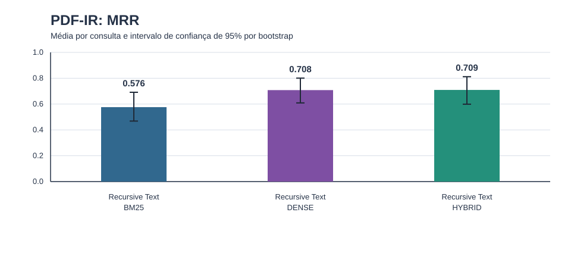
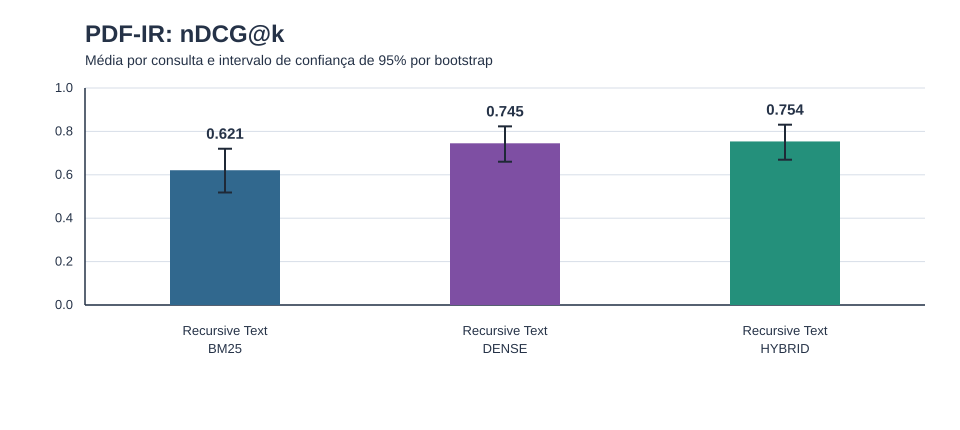
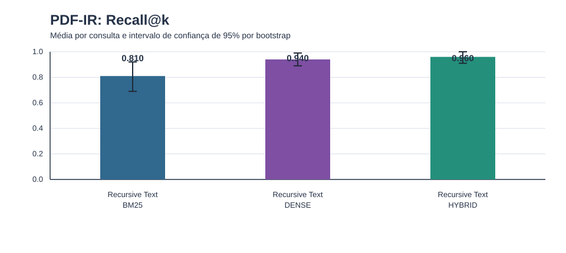
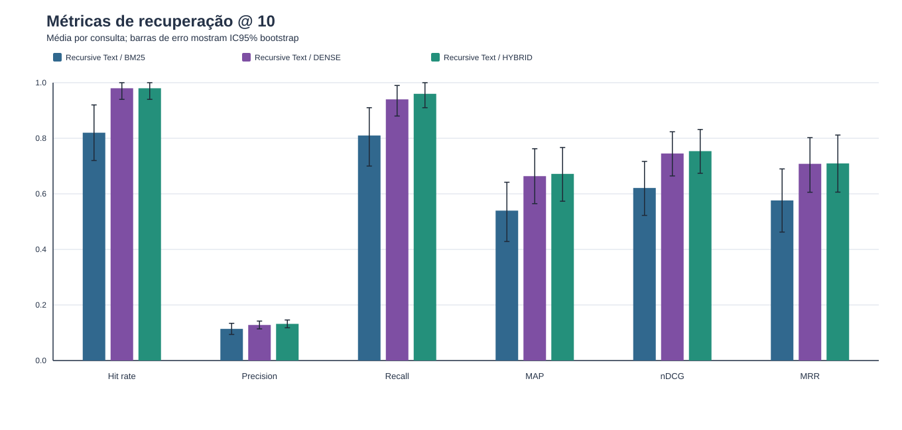
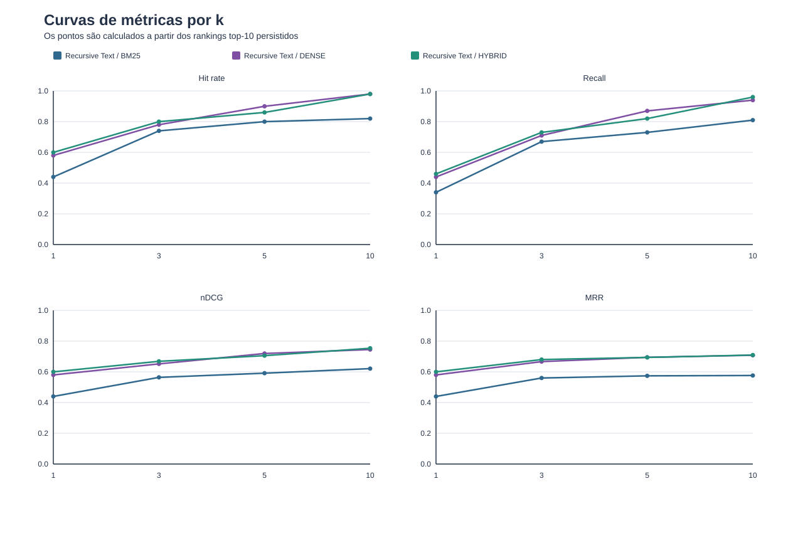
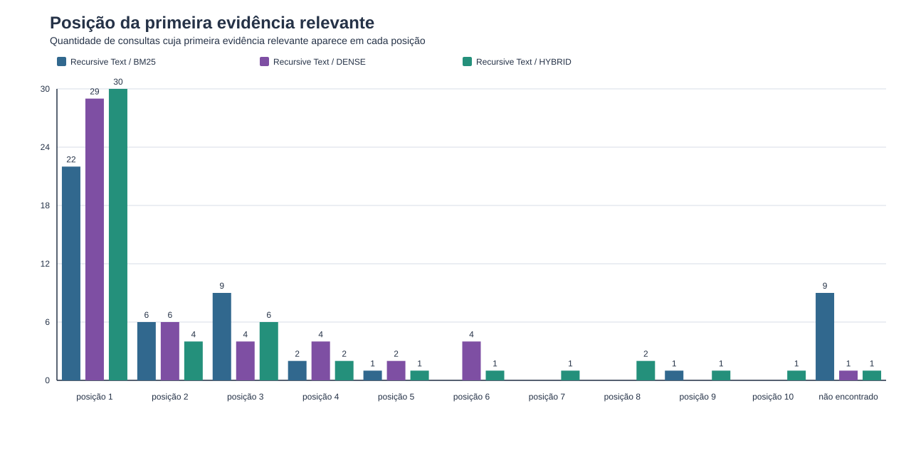
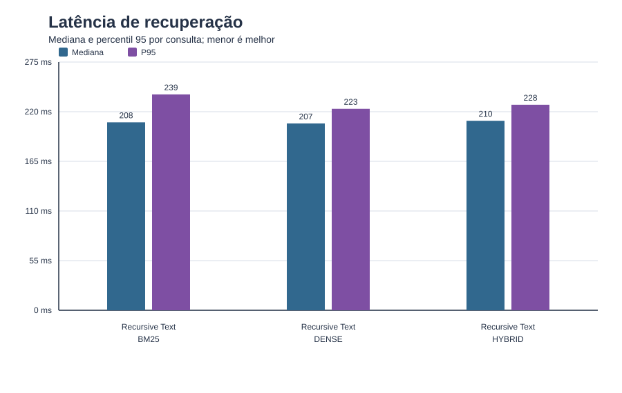

Intervalos obtidos por bootstrap de consultas dentro de cada condição.







| chunking_strategy | method | metric | queries | mean | ci95_low | ci95_high | bootstrap_repetitions | bootstrap_seed |
|---|---|---|---|---|---|---|---|---|
| recursive_text | bm25 | mrr | 50 | 0.576222 | 0.468333 | 0.691222 | 2000 | 42 |
| recursive_text | bm25 | ndcg_at_k | 50 | 0.621071 | 0.518454 | 0.720098 | 2000 | 42 |
| recursive_text | bm25 | recall_at_k | 50 | 0.81 | 0.69 | 0.92 | 2000 | 42 |
| recursive_text | dense | mrr | 50 | 0.708 | 0.609 | 0.800667 | 2000 | 42 |
| recursive_text | dense | ndcg_at_k | 50 | 0.745174 | 0.660273 | 0.823209 | 2000 | 42 |
| recursive_text | dense | recall_at_k | 50 | 0.94 | 0.89 | 0.99 | 2000 | 42 |
| recursive_text | hybrid | mrr | 50 | 0.709413 | 0.598905 | 0.811889 | 2000 | 42 |
| recursive_text | hybrid | ndcg_at_k | 50 | 0.753677 | 0.669541 | 0.830911 | 2000 | 42 |
| recursive_text | hybrid | recall_at_k | 50 | 0.96 | 0.91 | 1.0 | 2000 | 42 |
| chunking_strategy | left_method | right_method | metric | queries | mean_difference_left_minus_right | ci95_low | ci95_high | left_wins | ties | right_wins | mcnemar_exact_p | bootstrap_repetitions | bootstrap_seed | mcnemar_holm_p |
|---|---|---|---|---|---|---|---|---|---|---|---|---|---|---|
| recursive_text | bm25 | dense | hit_rate_at_k | 50 | -0.16 | -0.26 | -0.06 | 0 | 42 | 8 | 0.0078125 | 2000 | 42 | 0.0234375 |
| recursive_text | bm25 | dense | mrr | 50 | -0.131778 | -0.219 | -0.047 | 8 | 22 | 20 | None | 2000 | 42 | None |
| recursive_text | bm25 | dense | ndcg_at_k | 50 | -0.124103 | -0.194432 | -0.047021 | 11 | 13 | 26 | None | 2000 | 42 | None |
| recursive_text | bm25 | dense | recall_at_k | 50 | -0.13 | -0.25 | -0.04 | 2 | 40 | 8 | None | 2000 | 42 | None |
| recursive_text | bm25 | hybrid | hit_rate_at_k | 50 | -0.16 | -0.26 | -0.06 | 0 | 42 | 8 | 0.0078125 | 2000 | 42 | 0.0234375 |
| recursive_text | bm25 | hybrid | mrr | 50 | -0.13319 | -0.20127 | -0.068079 | 4 | 28 | 18 | None | 2000 | 42 | None |
| recursive_text | bm25 | hybrid | ndcg_at_k | 50 | -0.132606 | -0.183667 | -0.082658 | 4 | 21 | 25 | None | 2000 | 42 | None |
| recursive_text | bm25 | hybrid | recall_at_k | 50 | -0.15 | -0.25 | -0.06 | 0 | 42 | 8 | None | 2000 | 42 | None |
| recursive_text | dense | hybrid | hit_rate_at_k | 50 | 0.0 | 0.0 | 0.0 | 0 | 50 | 0 | 1.0 | 2000 | 42 | 1.0 |
| recursive_text | dense | hybrid | mrr | 50 | -0.001413 | -0.0525 | 0.042333 | 12 | 33 | 5 | None | 2000 | 42 | None |
| recursive_text | dense | hybrid | ndcg_at_k | 50 | -0.008502 | -0.049618 | 0.027531 | 15 | 25 | 10 | None | 2000 | 42 | None |
| recursive_text | dense | hybrid | recall_at_k | 50 | -0.02 | -0.05 | 0.0 | 0 | 48 | 2 | None | 2000 | 42 | None |
Sem comparacoes.